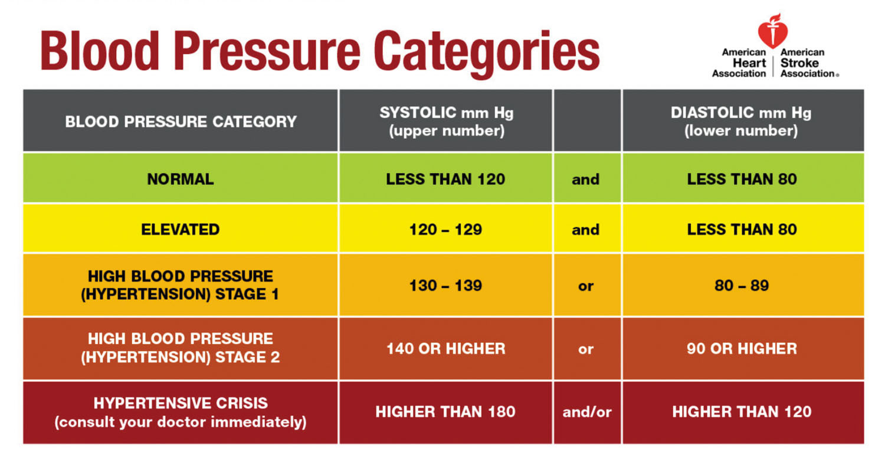
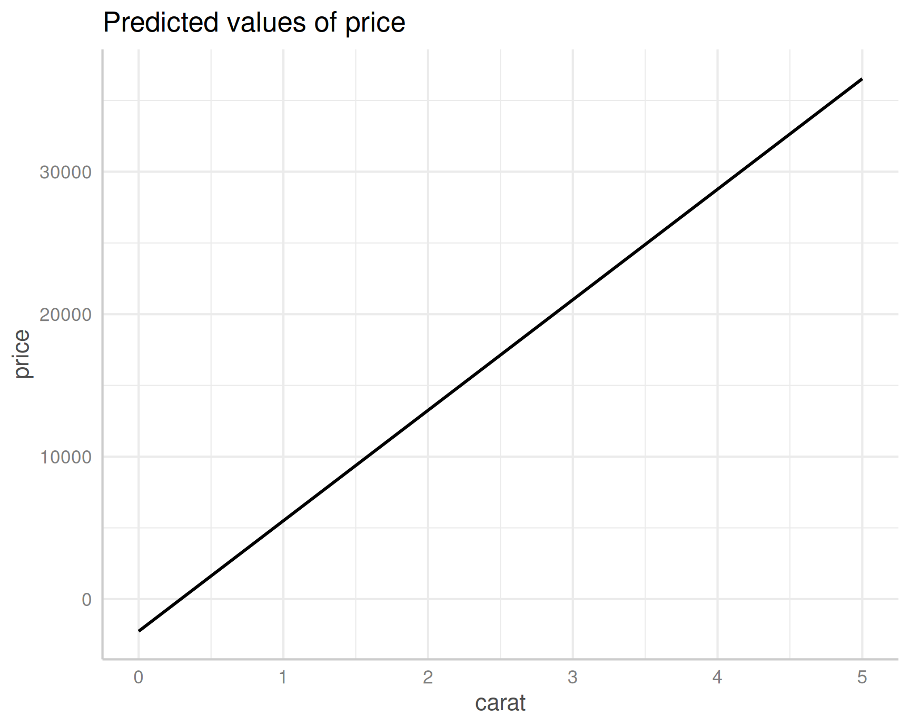
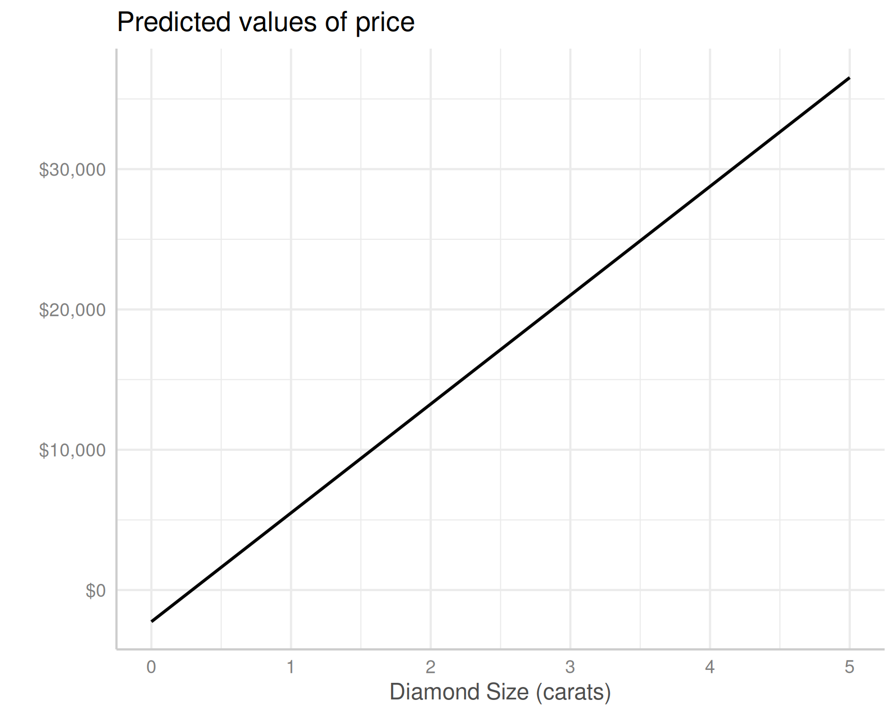
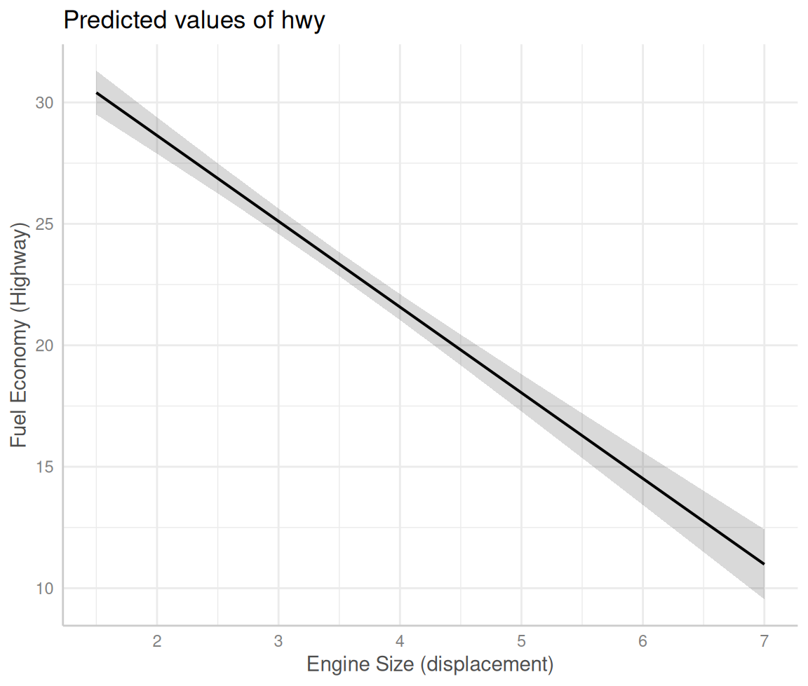
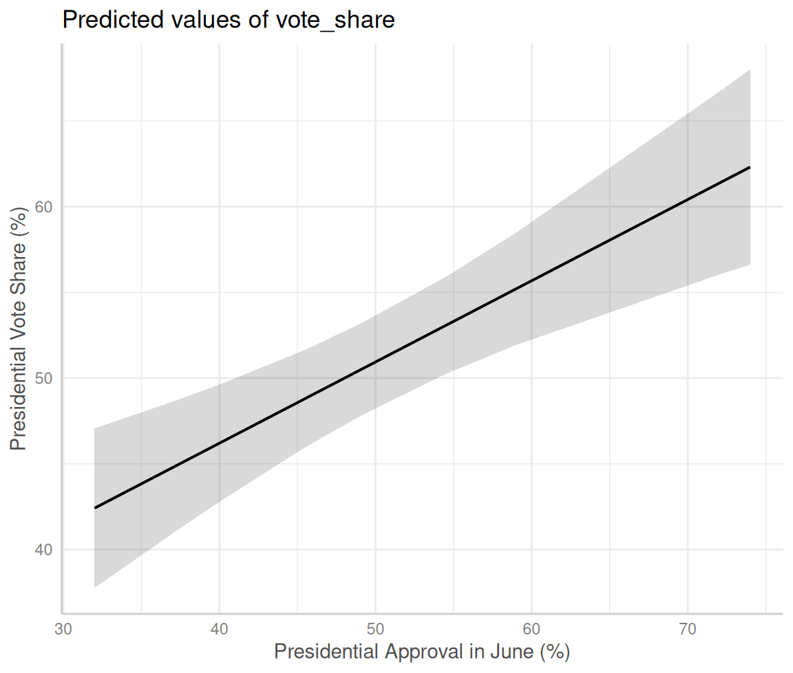

| R2 | n | k | AdjR2 |
|---|---|---|---|
| 0.348 | 50 | 1 | 0.334 |
| 0.489 | 186 | 3 | 0.481 |
| 0.631 | 393 | 2 | 0.629 |
| 0.355 | 1527 | 6 | 0.352 |
Today’s Agenda
Ordinary Least Squares (OLS) Regression
Using R to fit and evaluate a regression
New Notes: Regression_Analysis.R
Justin Leinaweaver (Spring 2026)
Textbook Exercise 5
Do the results of bivariate regression analysis address statistical significance, substantive significance, or both?

Textbook Exercise 6
Do gun owners give the Republican Party higher ratings than do people who do not own guns?
\[y = 40.2 + 11.5 (\text{gun owner}) \]
\[ \text{SE of } \beta = 0.76 \]
\[ \text{Adjusted } R^2 = 0.04 \]
Textbook Exercise 7
\[ \text{Adjusted-}R^2 = 1 - (1-R^2) (\frac{n-1}{n-k-1}) \]
OLS Regression in R
1. Fitting OLS Regressions in R
lm(data = dataset, outcome ~ predictor)

Call:
lm(formula = price ~ carat, data = diamonds)
Residuals:
Min 1Q Median 3Q Max
-18585.3 -804.8 -18.9 537.4 12731.7
Coefficients:
Estimate Std. Error t value Pr(>|t|)
(Intercept) -2256.36 13.06 -172.8 <2e-16 ***
carat 7756.43 14.07 551.4 <2e-16 ***
---
Signif. codes: 0 '***' 0.001 '**' 0.01 '*' 0.05 '.' 0.1 ' ' 1
Residual standard error: 1549 on 53938 degrees of freedom
Multiple R-squared: 0.8493, Adjusted R-squared: 0.8493
F-statistic: 3.041e+05 on 1 and 53938 DF, p-value: < 2.2e-162. Formatting Regression Tables in R

modelsummary(models, …)
- “models” is the list of regressions you want in the table
2. Formatting Regression Tables in R
| (1) | |
|---|---|
| (Intercept) | -2256.36* |
| (13.06) | |
| carat | 7756.43* |
| (14.07) | |
| Num.Obs. | 53940 |
| R2 | 0.849 |
| R2 Adj. | 0.849 |
| RMSE | 1548.53 |
| * p < 0.05 | |
2. Formatting Regression Tables in R
| (1) | |
|---|---|
| (Intercept) | -2256.36* |
| (13.06) | |
| Diamond Size (carats) | 7756.43* |
| (14.07) | |
| Num.Obs. | 53940 |
| R2 | 0.849 |
| R2 Adj. | 0.849 |
| RMSE | 1548.53 |
| * p < 0.05 | |
3. Making Predictions in R

ggpredict(model, terms)
“model” is the regression model you’ve already fit
“terms” is the predictor you want to focus on
3. Making Predictions in R
# Predicted values of price
carat | Predicted | 95% CI
--------------------------------------
0 | -2256.36 | -2281.95, -2230.77
1 | 5500.07 | 5485.86, 5514.27
2 | 13256.49 | 13220.87, 13292.12
3 | 21012.92 | 20950.81, 21075.02
4 | 28769.34 | 28680.10, 28858.59
5 | 36525.77 | 36409.18, 36642.363. Making Predictions in R

3. Making Predictions in R

Data: mpg dataset in the tidyverse
Regress city fuel economy (cty) on engine displacement (displ) in the mpg datatset
Fit the regression
Format the table
Make a predictions plot
| (1) | |
|---|---|
| (Intercept) | 25.99* |
| (0.48) | |
| Engine Size | -2.63* |
| (0.13) | |
| Num.Obs. | 234 |
| R2 | 0.638 |
| R2 Adj. | 0.636 |
| RMSE | 2.56 |
| * p < 0.05 | |
# Fit the model
practice1 <- lm(data = mpg, cty ~ displ)
# Polish the table
modelsummary(practice1,
fmt = 2,
stars = c('*' = .05),
gof_omit = "IC|Log|F",
coef_rename = c("displ"= "Engine Size"))
# Visualize model predictions
plot(ggpredict(practice1, terms = "displ")) +
labs(x = "Engine Size (displacement)",
y = "Fuel Economy (City)")Data: mpg dataset in the tidyverse
Regress highway fuel economy (hwy) on engine displacement (displ) in the mpg datatset
Fit the regression
Format the table
Make a predictions plot

| (1) | (2) | |
|---|---|---|
| (Intercept) | 25.99* | 35.70* |
| (0.48) | (0.72) | |
| Engine Size | -2.63* | -3.53* |
| (0.13) | (0.19) | |
| Num.Obs. | 234 | 234 |
| R2 | 0.638 | 0.587 |
| R2 Adj. | 0.636 | 0.585 |
| RMSE | 2.56 | 3.82 |
| * p < 0.05 | ||
# Fit the model
practice2 <- lm(data = mpg, hwy ~ displ)
# Polish the table
modelsummary(models = list(practice1, practice2),
fmt = 2,
stars = c('*' = .05),
gof_omit = "IC|Log|F",
coef_rename = c("displ"= "Engine Size"))
# Visualize model predictions
plot(ggpredict(practice2, terms = "displ")) +
labs(x = "Engine Size (displacement)",
y = "Fuel Economy (Highway)")Data: Incumbent_Performance_US_Elections.xlsx
Regress presidential vote share (vote_share) on presidential approval rating (approval_june) using the datatset on Canvas
Fit the regression
Format the table
Make a predictions plot

| (1) | |
|---|---|
| (Intercept) | 27.25* |
| (4.87) | |
| Approval in June (%) | 0.47* |
| (0.09) | |
| Num.Obs. | 12 |
| R2 | 0.716 |
| R2 Adj. | 0.688 |
| RMSE | 3.81 |
| * p < 0.05 | |
# Fit the model
practice3 <- lm(data = d, vote_share ~ approval_june)
# Polish the table
modelsummary(practice3,
fmt = 2,
stars = c('*' = .05),
gof_omit = "IC|Log|F",
coef_rename = c("approval_june"= "Approval in June (%)"))
# Visualize model predictions
plot(ggpredict(practice3, terms = "approval_june")) +
labs(x = "Presidential Approval in June (%)",
y = "Presidential Vote Share (%)")For Next Class
What explains the variation in global life expectancy?
Secondary education?
Measles immunity?
The fertility rate?